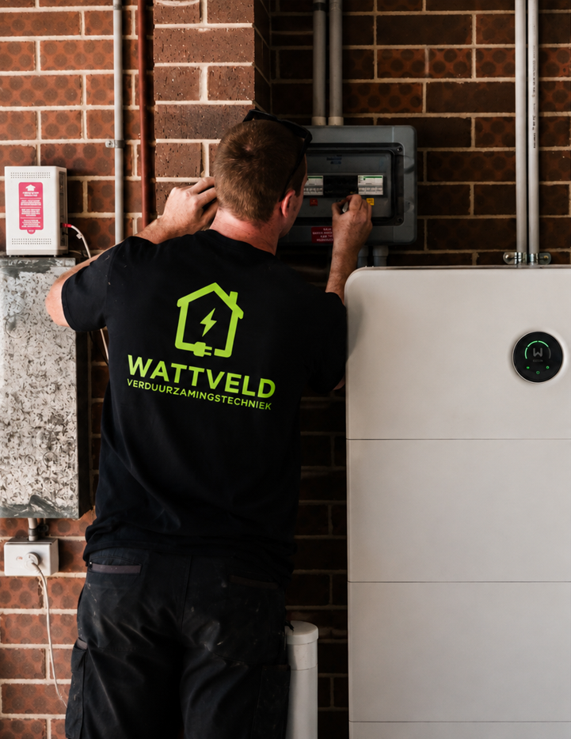
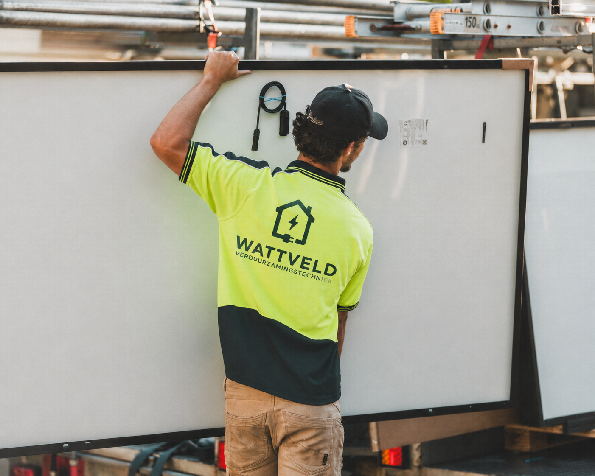
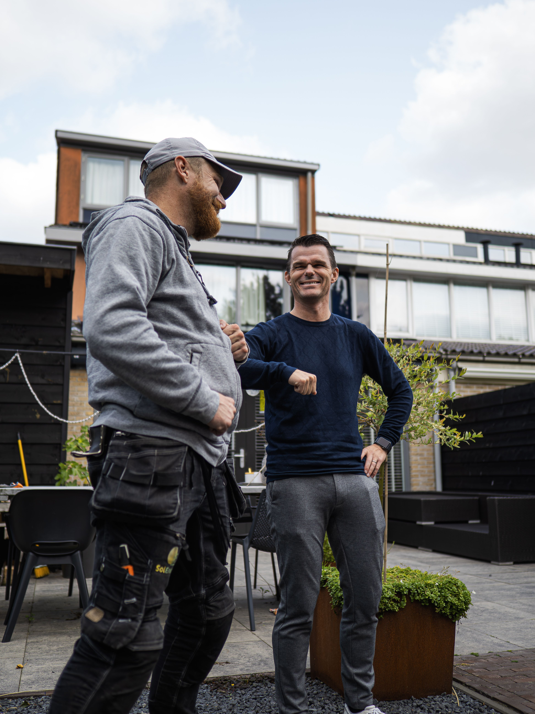

Wattveld verzorgt zonnepanelen, thuisbatterijen, warmtepompen en isolatie voor woningeigenaren in heel Nederland: van energiescan en subsidieaanvraag tot installatie door ons eigen team. Eén aanspreekpunt, een plan dat op de euro klopt.
Aardgasvrij verwarmen, afgestemd op uw woning
Een warmtepomp haalt warmte uit de buitenlucht en zet die om in verwarming en warm water voor uw woning, zonder aardgas. Wattveld bepaalt per woning welk type warmtepomp past en installeert 'm met ons eigen team.
Een warmtepomp onttrekt warmte aan de buitenlucht en brengt die, versterkt met elektriciteit, naar uw radiatoren, vloerverwarming en warmwatervoorziening.
Goede isolatie is een voorwaarde voor een efficiënte warmtepomp. Onze energiescan brengt in kaart of aanvullende isolatie nodig is voordat we installeren.
Geen gasaansluiting meer nodig, een lagere energierekening op termijn, en in aanmerking voor de ISDE-subsidie.

Met een thuisbatterij slaat u de zonne-energie die u overdag opwekt zelf op, zodat u hem 's avonds kunt gebruiken, in plaats van tegen een laag teruglevertarief aan het net terug te leveren.
Koelen in de zomer, energiezuinig bijverwarmen in de tussenseizoenen
Een airco koelt uw woning tijdens warme dagen en kan in het voor- en najaar efficiënt bijverwarmen, een prettige aanvulling naast een warmtepomp, of als zelfstandige oplossing.
Eén systeem voor verkoeling in de zomer en efficiënte bijverwarming buiten het stookseizoen.
Moderne airco's zijn nauwelijks hoorbaar en verbruiken aanzienlijk minder energie dan traditionele verwarming of koeling.
Uitstekend te combineren met zonnepanelen of een thuisbatterij, zodat u zoveel mogelijk op eigen opgewekte stroom draait.

Zonnepanelen wekken uw eigen stroom op en verlagen direct uw energierekening. Wattveld verzorgt de volledige dakopname, aanvraag en montage.
De basis onder elke verduurzaming
Hoe beter uw woning geïsoleerd is, hoe kleiner (en dus goedkoper) de warmtepomp die nodig is, en hoe minder energie u sowieso kwijt bent.
Via het dak verdwijnt de meeste warmte; goede dakisolatie is vaak de maatregel met het snelste rendement.
Vult de holle ruimte in de buitenmuur, met relatief weinig overlast en een korte terugverdientijd.
Voorkomt koude vloeren en tocht, en is een logische aanvulling op dak- en spouwmuurisolatie.
Subsidies en financiering voor uw verduurzaming
Bij aanschaf van zonnepanelen voor een woning betaalt u geen btw over de installatie.
Subsidie voor warmtepompen en isolatiemaatregelen, aan te vragen via de Rijksdienst voor Ondernemend Nederland.
Financier uw verduurzaming met een voordelige lening, ook zonder dat u zelf eigen middelen vooraf nodig heeft.
Veel gemeenten bieden aanvullende subsidies of leningen; wij checken wat voor uw adres geldt.
Voorwaarden en bedragen wijzigen regelmatig — vraag ons naar de actuele regelingen voor uw situatie.

Wattveld helpt woningeigenaren met eerlijk verduurzamingsadvies én de uitvoering ervan. We combineren technische kennis van installaties met actuele kennis van subsidieregelingen, zodat elk voorstel niet alleen op papier klopt maar ook in de praktijk. We blijven betrokken van de eerste scan tot de laatste factuur — met ons eigen team, zodat u altijd weet wie er voor de deur staat.
Antwoorden op de meest gestelde vragen over onze dienstverlening
Nee, we doen meer dan alleen zonnepanelen leveren. Naast zonnepanelen installeren we ook thuisbatterijen, warmtepompen en isolatie, zodat u een compleet verduurzamingstraject krijgt in plaats van losse maatregelen.
Een energiescan brengt het verbruik, de isolatiewaarde en de dakgeschiktheid van uw woning in kaart. Op basis daarvan stellen we een stappenplan op zodat u weet welke maatregelen zich het snelst terugverdienen.
Ja! We stellen samen met u vast welk resultaat u wilt bereiken. Zo ontvangt u alleen advies dat past bij uw woning, budget en planning, wat tijd bespaart en het rendement maximaliseert.
Elk voorstel wordt onderbouwd met een terugverdienberekening op basis van uw eigen energierekening. We adviseren alleen maatregelen die aantoonbaar renderen voor uw specifieke situatie — en voeren ze zelf uit.
Dat hangt af van uw doelstellingen en het aantal maatregelen. Samen bepalen we een planning en tempo die past bij uw woning en beschikbare tijd, zodat u gecontroleerd verduurzaamt zonder overhaaste keuzes.
Een standaard offerte gaat vaak uit van één merk of methode. Ons advies is zorgvuldig afgestemd op relevantie en rendement voor úw woning, en wordt uitgevoerd door ons eigen team van begin tot eind.
Vraag een gratis en vrijblijvende energiescan aan — we laten zien wat er mogelijk is voor uw woning.
info@wattveld.nl